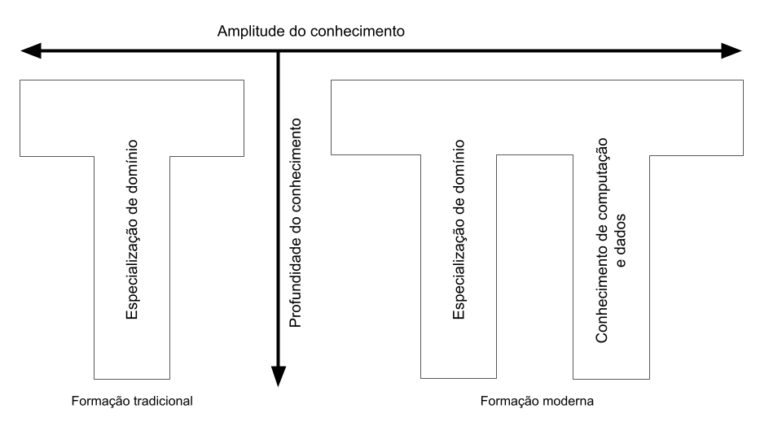

Preâmbulo
Em termos gerais, a Arqueologia pré-década de 1960 estava maioritariamente baseada numa descrição empírica da cultura material, o que incluía acreditar que uma grande quantidade de dados “falariam” sempre por si próprios. Os padrões emergiriam do estudo descritivo de coleções de dados, permitindo que cerâmicas, ferramentas em pedra ou estruturas arqueológicas fizessem sentido quando agrupadas segundo determinadas características, às quais depois eram atribuídos limites espaciais e temporais por meio do conceito normativo Childeano de “Cultura Arqueológica” Johnson (2019). Devido a este contexto teórico, os dados eram tidos como adquiridos pela maior parte dos arqueólogos e o processo de observação, registo e interpretação necessitava de pouca, se não mesmo nenhuma, justificação (Lock 2003).
As mudanças com a Nova Arqueologia, iniciadas na década de 1960 e intensificadas na década seguinte, marcaram a introdução do método científico e a rejeição da percepção subjetiva do empirismo arqueológico (Johnson 2019; Trigger 1989). No centro desta nova corrente estava a crença na objetividade por meio da observação sistemática, medição e registo de dados através da adoção dos denominados métodos quantitativos. Acreditava-se que a objetividade seria alcançada ao separar a teoria da prática, permitindo que os dados fossem medidos de forma independente por qualquer sujeito observador (Lock 2003). Assim, enquanto a ligação anterior entre dados e teoria era indutiva, i.e., uma recolha imparcial de “todos” os dados iria produzir teoria, o novo paradigma da arqueologia processual tinha como ponto central um raciocínio hipotético-dedutivo em que o conhecimento é acumulado através do teste de hipóteses explícitas (muitas vezes através do uso de testes estatísticos de significância) sobre dados recolhidos na base do que seria relevante para a análise (Trigger 1989). A grande implicação do método científico para a Arqueologia tornou-se, assim, na possibilidade de criar uma Arqueologia global, unida por métodos padronizados de análise (Clarke 1968), aplicáveis a qualquer conjunto de dados para estabelecer generalizações interculturais ou até mesmo “leis” do conhecimento arqueológico.
Se avançarmos para os dias de hoje, estas mudanças serviram como pedra basilar para algumas das mais recentes revoluções na forma como se pensa e se pratica Arqueologia. Fenómenos como a chamada “crise da replicação” nas ciências sociais (Baker 2016; Camerer et al. 2018; Serra-Garcia and Gneezy 2021), e consequentes alterações na forma de recolher, gerir e partilhar dados em Arqueologia estão a transformar a disciplina em todas as suas vertentes (Karoune and Plomp 2022; Marwick 2016).
Como em outras disciplinas, quando vários estudos arqueológicos independentes apresentam resultados semelhantes, consideramos que esses resultados são uma aproximação razoável ao comportamento humano do passado. Esta capacidade de reproduzir os resultados de outros estudos é um princípio fundamental do método científico e, quando as reproduções são bem sucedidas, a disciplina avança. Em Arqueologia há uma longa tradição em realizar testes empíricos de reprodutibilidade quando, por exemplo, se regressa a sítios escavados por gerações anteriores de arqueólogos ou quando se reanalisam coleções de museus utilizando novos métodos. Contudo, pouco progresso foi feito no que diz respeito a testar a replicabilidade dos dados recolhidos e das suas análises quantitativas. Este problema advém de duas razões principais. Primeiro, a maior parte das publicações raramente disponibiliza informações suficientes que permitam a outro arqueólogo reproduzir os resultados (Marwick 2016). Segundo, a formação base dos arqueólogos, particularmente em Portugal, raramente inclui o desenvolvimento de competências de organização, gestão e análise de dados. A ausência de uma componente de literacia de dados (do inglês data literacy, definida como a capacidade de ler, trabalhar, analisar e comunicar com dados) na formação em Arqueologia, compromete a qualidade dos dados arqueológicos, limita a sua reutilização e restringe a capacidade que os arqueólogos muitas vezes têm de se expressarem em contextos interdisciplinares. Como resultado, a contribuição que poderíamos ter em conversas contemporâneas fora do âmbito da Arqueologia também se torna bastante limitada, apesar de, teoricamente, estarmos bem posicionados para o fazer (Kintigh et al. 2014).
Neste contexto, a literacia de dados não consiste primariamente em capacitar os indivíduos a dominar uma habilidade específica ou a tornarem-se proficientes numa determinada plataforma de tecnologia. Em vez disso, trata-se de equipar os arqueólogos com as ferramentas necessárias para compreender os princípios subjacentes e os desafios associados aos dados (Bhargava et al. 2015; Kansa and Kansa 2021).
Atualmente são abundantes as discussões e iniciativas acerca das promessas e dos perigos de alavancar dados em diversos tamanhos e formatos para enfrentar os desafios do mundo como parte da Data Revolution, invocada em 2015 pelas Nações Unidas na sua Agenda de Desenvolvimento Global. Um artigo, amplamente citado, publicado pelo jornal The Economist intitulado “The Data Deluge: Businesses, Governments and Society Are Only Starting to Tap Its Vast Potential” (Cukier 2010) teve como um dos primeiros comentários online o seguinte: “Aqui estão os empregos do século XXI (...). Por favor entendam e eduquem a próxima geração em conformidade”. A importância da literacia de dados (assim como da literacia digital) para estudantes que terminam qualquer curso superior nos dias que correm, não deve ser desvalorizada. Em Arqueologia, em particular, é urgente a mudança para perfis profissionais em que a especialização e a profundidade de conhecimentos se conjugam com uma maior amplitude de conhecimento no uso, tratamento e análise quantitativa de dados digitais (ver Fig. 1). A crescente importância dos métodos digitais de registo, gestão e comunicação dos achados arqueológicos, obrigam, necessariamente, que todos os profissionais tenham um nível básico de literacia de dados, de preferência por meio de programas educativos especialmente direcionados para as especificidades dos dados arqueológicos.
Em 1998, Aldenderfer identificava esta lacuna nos cursos de 1º ciclo na área da Antropologia nos Estados Unidos da América, dizendo:
“Undergraduates, except for the most motivated, are unlikely to ever see a quantitative class, and therefore, many are poorly prepared for graduate study. Those who choose to go into cultural resources management also will be poorly trained, a perennial complaint from the managers who hire them.” (Aldenderfer 1998, 108)
Do lado de cá do Atlântico, e no caso de Portugal em particular, a situação não é, infelizmente, muito diferente. As páginas que se seguem, bem como a unidade curricular que representam, são um modesto contributo para a mudança deste paradigma. Serão, a seu tempo, disponibilizadas online na íntegra (em conjunto com os ficheiros necessários para a realização dos exercícios), para que sirvam de suporte a todos os estudantes que procurem material introdutório sobre análise de dados em Arqueologia.